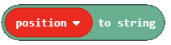

Detyrë - Mbjellja e pemëve¶
Ngjarjet janë dukuri, të cilat zakonisht janë rezultat i diçkaje që bëri përdoruesi (klikimi i mouse, shtypja e tasteve në tastierë, zvarritja dhe rënia, etj.). Një ngjarje shkakton një reagim. Një ngjarje në shkencën e kompjuterit është një veprim i zbuluar (realizuar) nga një kompjuter. Për shembull, duke klikuar mouse, ne hapim një aplikacion, kur fillon të bjerë shi njerëzit me çadra të hapura. Në programim, një mbajtës i ngjarjeve është pjesë e programit (funksionit) i cili aktivizohet si rezultat i ndonjë ngjarje. Në mbajtësit e ngjarjes MakeCode janë blloqe që zakonisht fillojnë me fjalën on:

Ne do të përdorim një ngjarje për të simuluar mbjelljen e pemëve dhe për të shfaqur pozicionin aktual të personazhit në botën e Minecraft, duke shtuar komandën position.
Faza 1.
Të menduarit për detyrën Karakteri ndërvepron me botën duke lëvizur rreth, mbillen pemë. Karakteri mbjell pemë duke lëvizur nëpër botën e Minecraft. Dërgimi i një mesazhi (përmes chat) tregon pozicionin aktual të personazhit.
Faza 2
Hapni Code Builder (duke shtypur butonin C); do të shfaqet një dritare redaktori ku mund të vendosni blloqe.
Për të filluar bisedën, ose më saktë, për të nxitur një ngjarje e cila do të shfaq pozicionin aktual të personazhit, duhet të tërheqim bllokun  nga kategoria
nga kategoria  në sipërfaqen e punës, dhe më pas shtypni fjalën position në fushën e hyrjes së këtij blloku.
në sipërfaqen e punës, dhe më pas shtypni fjalën position në fushën e hyrjes së këtij blloku.
Brenda këtij blloku, duhet të shtojmë blloqe që do të thonë pozicionin aktual. Për të thënë ndonjë mesazh (psh. Pozicioni im aktual është:) duhet të përdorim bllokun  nga kategoria
nga kategoria 
Pozicioni i personazhit (lojtarit) ruhet në bllokun | position| nga kategoria Meqenëse duam të shfaqim pozicionin e luajtësit në chat, duhet të përdorim bllokun  formoni kategorinë  . Në vend të opsionit
. Në vend të opsionit position, ne do të futim bllokun  në fushë:
në fushë:

Le ta testojmë këtë pjesë të kodit duke klikuar butonin 
Pas testimit të programit, ne mund të shohim se kemi marrë atë që donim. Kur përdoruesi shtyp butonin T, hap bisedën dhe shkruan në mesazh pozicionin, pozicioni aktual i lojtarit në botë do të shfaqet.

Tani duhet të krijojmë një ngjarje për personazhin, e cila do t’i mundësojë asaj të mbjellë pemë në botën e Minecraft me lëvizjen e saj. Kjo do të arrihet me bllokun  . Nga lista drop-down e këtij blloku ne do të zgjedhim opsionin
. Nga lista drop-down e këtij blloku ne do të zgjedhim opsionin walk:

Dhe së fundi, duhet të vendosim bllokun  nga kategoria
nga kategoria  brenda këtij blloku. Ne e përdorim këtë bllok për të vendosur (ose në rastin tonë bimë) një pemë. Nga lista drop-down e këtij blloku ne do të zgjedhim bllokun i cili përfaqëson një pemë:
brenda këtij blloku. Ne e përdorim këtë bllok për të vendosur (ose në rastin tonë bimë) një pemë. Nga lista drop-down e këtij blloku ne do të zgjedhim bllokun i cili përfaqëson një pemë:

Në pjesën at të bllokut, ku duhet të përcaktojmë pozicionin e bllokut që duam të vendosim në botë, do t’i lëmë të tre vlerat të jenë 0  . Kjo do të lejojë që pemët të mbillen në të njëjtin plan karakteri është i vendosur.
. Kjo do të lejojë që pemët të mbillen në të njëjtin plan karakteri është i vendosur.
Pas të gjitha ndryshimeve, pjesa e kodit për mbjelljen e pemëve është paraqitur në figurën më poshtë:

faza 3
Testo programin.
Kliko butonin .

Pasi të kemi testuar programin, mund të konkludojmë se bëri atë që donim. Personazhi po mbjell e pemë duke lëvizur përreth.